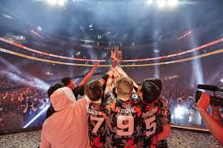
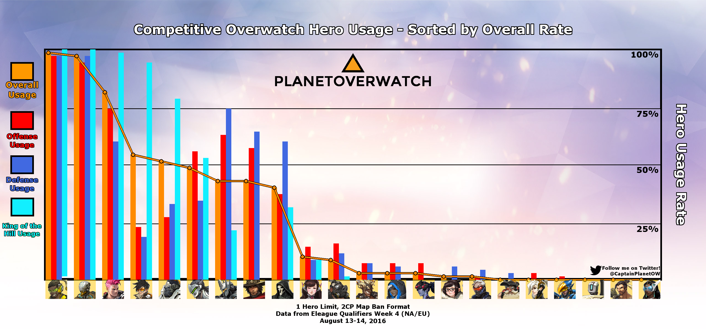

It appears as if North America is the dominant force in the league. San Francisco
bested both the Shanghai Dragons and the Seoul Dynasty in an impressive run to become
the champions. San Francisco showed excellence in all three roles, Tanks, Damage and Healing.
What makes this victory even more significant, is the fact they won in 2019 as well and
are now the back to back champions. It seems as if the San Francisco Shock dynasty is in full
effect.
of 4-2 in favor of the Shock. The Shock came out swinging and absolutely dominated on the first map
taking the early lead. After losing the first map, the Dynasty chose the next map to play.
The selection of Kings Row seemed to favor the Dynasty, but a strong defense by the Shock would prove
otherwise. The Shocks early lead would not last. The Dynasty would battle back to even up the series
at 2-2, but from there on, the Shock would show the world why they are indeed the back to back Overwatch
League Grand Champions. The Shock would go on to win the following two matches in a grueling battle, but
their ability to adapt and overcome has been, and will be, what keeps the W's rolling in for the Shock.

The Overwatch meta is constantly shifting due to the never ending balancing done by the developers.
New heroes or new maps will always call for balance updates, but sometimes it’s not as easy as it seems
to keep things even. It was only a few weeks ago where we saw Roadhog receive a buff that made him almost
a necessity to have on your team in order to win. Thankfully those changes have been reverted and the playing
field has seemed to be leveled.
First we will break down the tanks. The tanks seem to be incredibly balanced, allowing overwatch players to pick
whatever their favorite combination is. Reinhardt and Zayra or Winston and D.V.A, or any of the synergetic tank combinations.
What we are seeing now more than ever, is playing tanks according to the map. One example of this would be playing dive tanks
on Numbani or Watchpoint Gibraltar. This is precisely what the developers goal is, map based meta.
Now for damage, we haven’t seen any crazy shifts. The meta has seemed to remain true. Ashe is the best dps, but characters like Widowmaker
and Tracer are still very viable due to their high skill cieling. Genji has been up and down recently due to the current patch, but currently
he is in a good place as well. Something that has not changed at all is the fact that if your aim is good, you can play whatever you please.
This is something that will always be true.
Finally we have healers. The healer meta seems to be non-existent at the moment. You really just need to play healers that compliment the rest of your team's composition.
One main healer and one off healer is still ideal, but really anything can work.